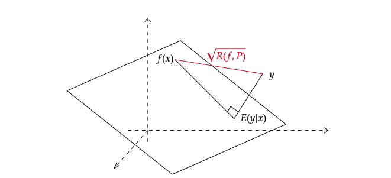
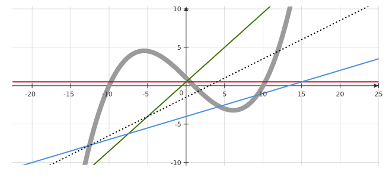
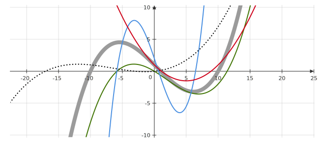

Week 2¶
A Useful Technique¶
Recall that the oracle predictor is given by
which is a function of \(x\), denoted as \(f^*(x)\).
Key Property¶
We will prove the following equation
which holds for all functions \(g\) where \(Var\left(g(x)\right)<+\infty\)(1). Specifically, when taking \(g(x)\equiv 1\), we obtain the law of total expectation, i.e. \(E\left(y\right) = E\left(E(y|x)\right)\)(2).
- This a technical assumption which is usually satisfied in practical problems.
- One special case states that if \(\left\{A_i\right\}\) is a finite or countable partition of the sample space, then \(E(X)=\sum_i E\left(X | A_i\right) \cdot Pr\left(A_i\right)\).
Obviously, it is equivalent to
which is an orthogonality property.
Proof¶
where the last equation is from \(p(y|x) p(x) = p(x,y)\).
Reprove the Oracle Predictor¶
Let us show again that \(E(y|x)\) is the oracle predictor under the squared error loss:
where the last equation is from the equivalent form of the Key Property regarding the above \(\color{red}{\text{red}}\) term as a function of \(x\). Note that both the \(\color{green}{\text{green}}\) and \(\color{blue}{\text{blue}}\) term are non-negative, and the \(\color{blue}{\text{blue}}\) term is independent of \(f\). Therefore, to minimize \(R(f,P)\), it is sufficient to minimize the \(\color{green}{\text{green}}\) term, and the minimizer \(f^*(x) = E(y|x)\).
Geometric Illustration¶
Pythagorean Decomposition of \(R(f,P)\): \(E(y|x)\) can be viewed as an orthogonal projection of \(y\) on the space of random variables that are functions of \(x\).
To illustrate this decomposition, consider the space of all r.v. with finite variance(1) and the set of all r.v. that are functions of \(x\) becomes a hyperplane lying in this space. Assume \(y\) cannot simply written as certain function of \(x\). The Pythagorean decomposition of \(R(f,P)\) is shown in the following figure.
- This space is a \(L^2\) space.

An Example of Decomposition¶
If taking \(f(x)=E(y)\), a constant, in the decomposition of the prediction error, we have
The last equation is because \(E\left(E(y|x)\right) = E(y)\), by Key Property.
Bias-Variance Decomposition¶
Denote the data set as \(\mathcal{D}_n\) and the model based on learning algorithm \(\phi_n\) and this data set as \(\hat{f}_{\mathcal{D}_n}(x)\) (1). Consider the expected risk of the learning algorithm \(\phi_n\), denoted as \(\mathcal{R}\),
- The model is the function \(f\) we are looking for, which uses features to predict outputs. For details, see Learning Algorithm.
where the \({\color{green} \text{green}}\) term is the oracle predict error \(R^*(P)\) and we will focus on the \({\color{red} \text{red}}\) term.
We can apply Fubinis's theorem to the \({\color{red} \text{red}}\) term. To illustrate this, we consider the following integral:
where we can exchange the integrals by Fubinis's theorem and finally get the integral of \(x,y\) to be the most outside integral. Then, we have
where the two terms are \({\color{blue} \text{variance term}}\) (at a fixed \(x\)) and \({\color{gray} \text{bias term}}\), respectively.
To illustrate this, if the oracle predictor \(E(y|x)\) is some 3-degree polynomial, assume we fit data sets via linear functions and 3-degree polynomials. For the linear learning algorithms, since \(E(y|x)\) is some 3-degree polynomial and \(E_{\mathcal{D}_n}\left(\hat{f}_{\mathcal{D}_n}\right)\) is some linear function, the \({\color{gray} \text{bias term}}\) is likely to be large; on the other hand, \({\color{blue} \text{variance term}}\) may not be too large, for linear functions vary slightly compared among linear functions. This 'small variance' is shown in the following figure,  where the gray thick curve is \(E(y|x)\), and colored curves are different prediction functions based on different data sets, and dashed curve is \(E_{\mathcal{D}_n}\left(\hat{f}_{\mathcal{D}_n}\right)\). Conversely, for 3-degree-polynomial learning algorithms, the \({\color{gray} \text{bias term}}\) is likely to be small and \({\color{blue} \text{variance term}}\) may be large. This 'large variance' is shown in the following figure. 
To better understand this, we can consider an extreme example. If we use very high degree polynomials to fit data sets, we can make our prediction function exactly go through each training data point. In this case, the bias would be small, which mainly comes from the noise of the data set itself. However, higher degree polynomials can oscillate more freely than lower degree polynomials, and this usually leads to our prediction function shaping drastically different to each other when coming from different data sets.